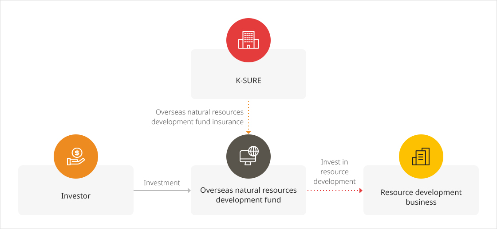

Overseas Natural Resources Development Fund Insurance
Overview of Scheme
- This scheme is to partially compensate for losses suffered by resource development funds under the Overseas Resources Development Business Act investing in overseas resource development business.
- Overseas resource development fund insurance was introduced with a goal to promote and activate the inflow of private funds by increasing the stability of investment transactions for overseas resource development, and therefore contribute to national economic development through the long-term and stable supply of key strategic resources.
Main Content
| Category | Description |
|---|---|
| Support target |
|
| Target Minerals |
|
| Scope of Support |
|
| Risks Covere |
|
Product Structure

크게보기
- K-SURE - Overseas natural resources development fund insurance
- Overseas natural resources development fund
- Investor - Investment
- Overseas natural resources development fund - Invest in resource development
- Resource development business
{kind=link}